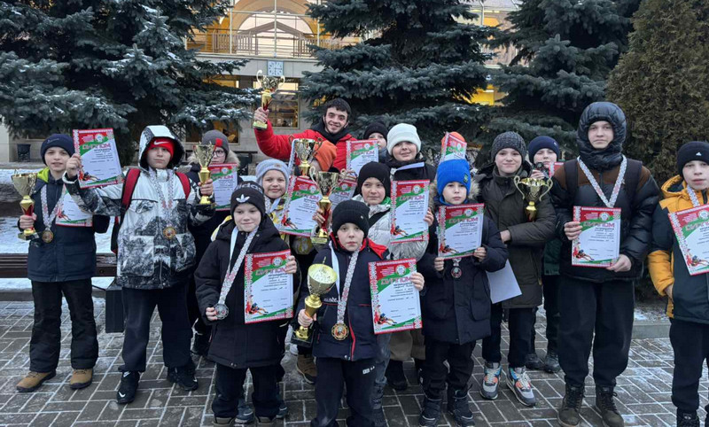

Самбо
Ульян Куприенко — юный самбист из Жлобина, воспитанник отделения самбо Жлобинской районной СДЮШОР. Полноценной биографии у него пока нет — это совсем юный спортсмен (на стартах он выступал среди детей 8–11 лет), но за короткое время он уже успел отличиться на областных соревнованиях.
Ульян тренируется в секции самбо, которая начала работать на базе жлобинской СДЮШОР весной 2024 года — секция молодая, но быстро набрала около 70 ребят. Тренер Ульяна — Илья Майоров, мастер спорта, чемпион Республики Беларусь по самбо 2024 года.